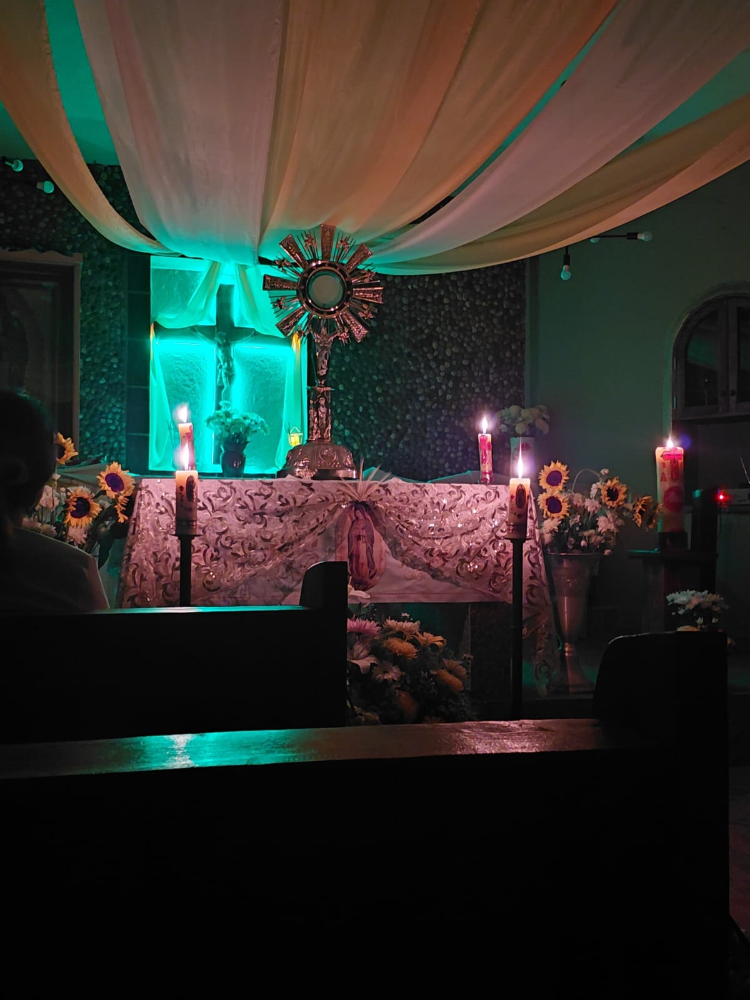
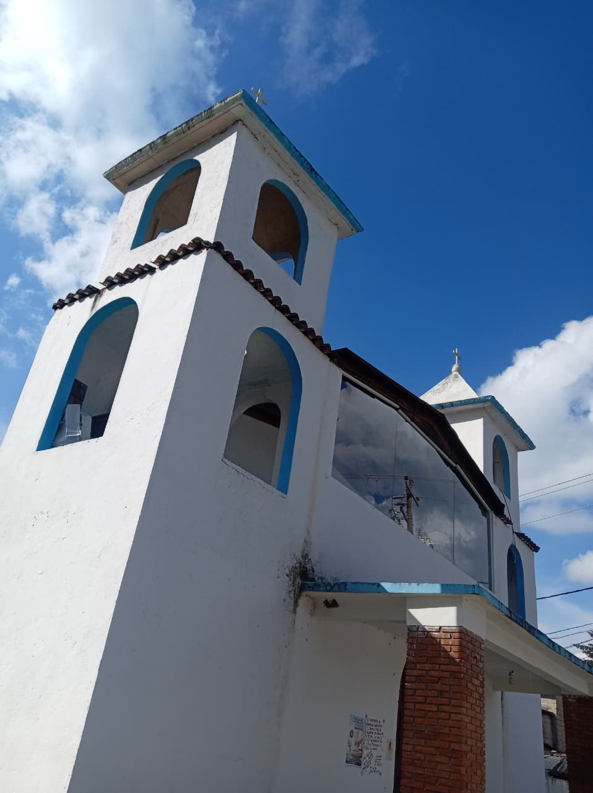
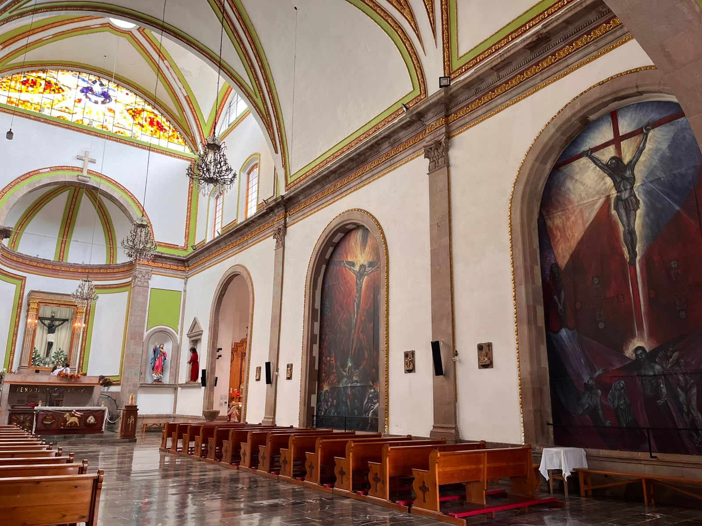
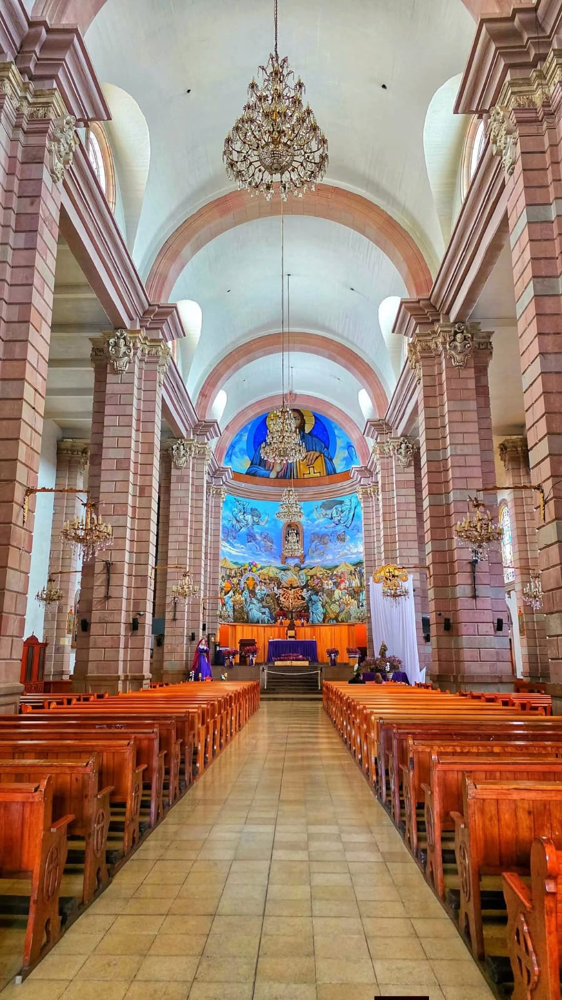

Rinconcitos que puedes visitar.

DIRECCIÓN: Godines Tehuastepec.
Se celebra el 12 de Diciembre en honor a la virgen de Guadalupe. Esta festividad es una de las más importantes del país y se conmemora en honor a la Virgen de Guadalupe, quien apareció a San Juan Diego en el cerro del Tepeyac en 1531. La celebración incluye misas, danzas, peregrinaciones y diversas actividades religiosas que son parte de la identidad cultural y religiosa de los pueblos originarios.

DIRECCIÓN:El fresno
Se celebra el 8 y 9 de Diciembre en honor a San Juan Diego al cual es una festividad muy esperada por la comunidad Fue donado a la iglesia a la cual no tenia ningun santito al cual selebrarce .

DIRECCIÓN:Santa Maria Valle de Bravo.
Se celebra el 3 de Mayo a Cristo Negro El 3 de mayo, Valle de Bravo celebra la Feria de Santa María, una festividad religiosa y comunitaria que rinde culto al Cristo Negro.

DIRECCIÓN:San francisco de Asis Valle de Bravo.
Se celebra el 4 de Octubre a San francisco de Asis La Fiesta de San Francisco de Asís en Valle de Bravo es una celebración que reúne a la comunidad y visitantes en torno a actos religiosos y festividades culturales. Durante esta fiesta, se realizan misas solemnes, procesiones, actividades culturales como música tradicional y danzas, y puestos de comida típica.